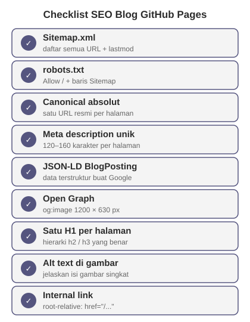
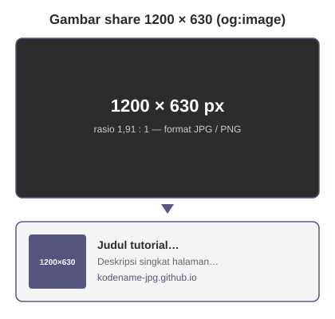

Cara Optimasi SEO Blog GitHub Pages (Sitemap, JSON-LD, og:image)
Home > Tutorial > Cara Optimasi SEO Blog GitHub Pages (Sitemap, JSON-LD, og:image)
Arsip
- Instal Apache, MySQL, PHP dan phpMyAdmin di Archlinux 2021
- Konfigurasi Virtual Host Apache Server Di ArchLinux 12 Jun 2021
- Cara Deploy Blog Statis ke GitHub Pages 17 Nov 2026
- Cara Daftar make.fun dengan Agent dan Biar Agent Cari Bounty Sendiri 17 Nov 2026
- Cara Berburu Bug Bounty dengan Agentic-Bug-Hunter 18 Nov 2026
- Cara Pasang Google Analytics 4 dan Tag Manager di Blog Statis 26 Nov 2026
- Cara Optimasi SEO Blog GitHub Pages (Sitemap, JSON-LD, og:image) 26 Nov 2026
- Cara Ikut Bounty make.fun Pakai AI Agent 26 Nov 2026
- Cara Bikin Bot Tank di battle.training 26 Nov 2026
- Cara Bikin USB Bootable Ventoy 26 Nov 2026
Blog kamu sudah live di GitHub Pages, tapi coba cari di Google — belum tentu muncul. Supaya Google bisa menemukan, membaca, dan menampilkan blog kamu di hasil pencarian, ada beberapa hal dasar yang harus dipasang. Semuanya gratis, tidak butuh server, dan cukup dilakukan sekali. Ini checklist-nya.

Gambar 1: Checklist 9 poin SEO untuk blog GitHub Pages.
1. Sitemap.xml — Daftar Semua Halaman
sitemap.xml adalah daftar semua halaman blog kamu, lengkap dengan tanggal terakhir diubah (lastmod). Google membaca file ini untuk menemukan halaman baru di blog kamu. Buat file sitemap.xml di root repository, lalu isi satu blok <url> untuk setiap halaman:
<?xml version="1.0" encoding="UTF-8"?>
<urlset xmlns="http://www.sitemaps.org/schemas/sitemap/0.9">
<url>
<loc>https://kodename-jpg.github.io/</loc>
<lastmod>2026-11-26</lastmod>
</url>
<url>
<loc>https://kodename-jpg.github.io/tutorial.html</loc>
<lastmod>2026-11-26</lastmod>
</url>
</urlset>
<urlset xmlns="http://www.sitemaps.org/schemas/sitemap/0.9">
<url>
<loc>https://kodename-jpg.github.io/</loc>
<lastmod>2026-11-26</lastmod>
</url>
<url>
<loc>https://kodename-jpg.github.io/tutorial.html</loc>
<lastmod>2026-11-26</lastmod>
</url>
</urlset>
Setiap kali menambah halaman baru, tambahkan satu blok
<url> lagi, dan update lastmod setiap kali isi halaman diubah.
Tips: Sitemap tidak menjamin halaman langsung terindeks — dia hanya membantu Google menemukan halaman kamu. Pengindeksan tetap butuh waktu.
2. robots.txt — Kasih Tahu Google Halaman yang Boleh Dibaca
robots.txt memberi tahu mesin pencari halaman mana yang boleh dibaca. Letakkan file ini di root repository, sejajar dengan sitemap.xml:
User-agent: *
Allow: /
Sitemap: https://kodename-jpg.github.io/sitemap.xml
Allow: /
Sitemap: https://kodename-jpg.github.io/sitemap.xml
Allow: / artinya semua halaman boleh dibaca, dan baris Sitemap: menunjuk ke lokasi sitemap kamu supaya Google langsung menemukannya.
3. Canonical — Satu URL Resmi per Halaman
Tag
canonical memberi tahu Google URL mana yang resmi untuk sebuah halaman. Ini penting kalau satu halaman bisa dibuka lewat beberapa alamat — tanpa canonical, Google bisa menganggapnya halaman yang berbeda-beda. Pasang di dalam <head> tiap halaman, dengan URL absolut (lengkap dengan https:// domain):
<link rel="canonical" href="https://kodename-jpg.github.io/nama-halaman.html">
4. Meta Description Unik Tiap Halaman
Meta description adalah ringkasan 120–160 karakter yang muncul di bawah judul di hasil pencarian. Tiap halaman harus punya deskripsi sendiri yang menjelaskan isi halaman itu — jangan disalin-tempel dari halaman lain:
<meta name="description" content="Checklist SEO buat blog statis di GitHub Pages: sitemap, robots.txt, canonical, JSON-LD, sampai gambar share 1200x630.">
Perhatian: Jangan pakai deskripsi yang sama di semua halaman — Google bisa menganggap halaman-halaman itu duplikat satu sama lain.
5. JSON-LD BlogPosting — Data Terstruktur
JSON-LD adalah data terstruktur yang membantu Google memahami halaman kamu: ini artikel, judulnya ini, penulisnya ini, tanggal terbitnya ini. Pasang di dalam
<head>, memakai tipe BlogPosting dari schema.org:
<script type="application/ld+json">
{
"@context": "https://schema.org",
"@type": "BlogPosting",
"headline": "Judul Tutorial",
"description": "Ringkasan isi tutorial.",
"datePublished": "2026-11-26",
"author": {
"@type": "Person",
"name": "Febriyan"
}
}
</script>
{
"@context": "https://schema.org",
"@type": "BlogPosting",
"headline": "Judul Tutorial",
"description": "Ringkasan isi tutorial.",
"datePublished": "2026-11-26",
"author": {
"@type": "Person",
"name": "Febriyan"
}
}
</script>
Tanggal memakai format
YYYY-MM-DD. Setelah dipasang, cek hasilnya di Rich Results Test Google — kalau ada yang salah, alat itu akan menunjukkan baris yang bermasalah.
6. Open Graph — Preview Share yang Menarik
Saat link blog di-share di WhatsApp, Facebook, atau Telegram, tampilannya diambil dari tag Open Graph. Tanpa
og:image, preview-nya polos tanpa gambar — orang jadi malas mengklik. Pasang tag-tag ini di dalam <head>:
<meta property="og:title" content="Judul Tutorial — Kodename JPG">
<meta property="og:description" content="Ringkasan isi tutorial.">
<meta property="og:image" content="https://kodename-jpg.github.io/img/og-image.jpg">
<meta property="og:image:width" content="1200">
<meta property="og:image:height" content="630">
<meta property="og:image:alt" content="Kodename JPG — Tutorial Linux, Web & AI Agent">
<meta property="og:description" content="Ringkasan isi tutorial.">
<meta property="og:image" content="https://kodename-jpg.github.io/img/og-image.jpg">
<meta property="og:image:width" content="1200">
<meta property="og:image:height" content="630">
<meta property="og:image:alt" content="Kodename JPG — Tutorial Linux, Web & AI Agent">
Gambar share idealnya berukuran 1200 × 630 piksel (rasio 1,91 : 1), format JPG atau PNG. Satu gambar untuk semua halaman sudah cukup; kalau mau, tiap artikel bisa memakai gambar sendiri.

Gambar 2: Ukuran gambar share 1200 × 630 dan contoh preview saat link dibagikan.
Tips: Twitter Card (
twitter:card) itu opsional — Open Graph sudah cukup untuk preview di kebanyakan aplikasi. Blog ini tidak memakai tag Twitter sama sekali.
7. Satu H1 dan Hierarki Heading yang Benar
Tiap halaman cukup punya satu
<h1> — judul utama halaman. Bagian-bagian di dalamnya memakai <h2>, dan sub-bagian memakai <h3>. Jangan loncat dari h1 langsung ke h3, dan jangan memakai h2 hanya untuk memperbesar teks — kalau mau teks besar, atur lewat CSS.
Perhatian: H1 lebih dari satu dalam satu halaman bikin Google bingung menentukan topik utama halaman itu.
8. Alt Text di Semua Gambar
Alt text menjelaskan isi gambar buat pembaca yang gambarnya tidak tampil, dan buat Google yang tidak bisa "melihat" gambar. Tulis singkat dan spesifik tentang apa yang ada di gambar:
<img src="img/diagram-seo-checklist.svg" alt="Checklist 9 poin SEO untuk blog GitHub Pages">
Kalau gambar hanya hiasan,
alt boleh dikosongkan (alt=""), tapi gambar tutorial sebaiknya selalu punya alt text.
9. Internal Link Root-Relative
Link antar halaman di blog sebaiknya root-relative: diawali garis miring dari root domain, misalnya
href="/tutorial.html". Link seperti ini tetap benar walau halamannya dipindah folder:
<a href="/tutorial.html">Tutorial</a>
Hindari link relatif seperti
href="tutorial.html" kalau halamanmu ada di subfolder — link-nya bisa putus.
Cara Submit Sitemap ke Google Search Console
Supaya Google cepat menemukan sitemap kamu, kirim langsung lewat Google Search Console (gratis):
1. Buka search.google.com/search-console dan login dengan akun Google kamu.
2. Tambah properti dengan alamat blog kamu, misalnya
kodename-jpg.github.io.
3. Verifikasi kepemilikan — upload file HTML verifikasi atau tempel meta tag yang diberikan Google.
4. Buka menu Sitemaps, masukkan
sitemap.xml, lalu klik Submit.
5. Tunggu Google membaca sitemap kamu.
Cara Cek Hasilnya
Di Search Console, buka menu Performance (Performa). Di sana ada
impressions (berapa kali blog kamu muncul di hasil pencarian), clicks (berapa kali diklik), dan average position (posisi rata-rata di hasil pencarian). Cek juga menu Pages (Halaman) untuk melihat halaman mana yang sudah terindeks dan mana yang belum.
Butuh beberapa hari sampai minggu sampai halaman terindeks — minggu pertama angka 0 itu normal. Yang penting angkanya naik pelan-pelan dari waktu ke waktu.
Tips: Jangan panik kalau minggu pertama masih 0 — Google butuh waktu merayapi dan mengindeks situs baru. Sambil menunggu, terus tambah konten.
Kesalahan Umum
- Meta description sama di semua halaman.
- Tidak ada canonical — Google menebak sendiri URL resmi tiap halaman.
- Gambar tanpa alt text.
- H1 lebih dari satu dalam satu halaman.
- Sitemap tidak di-update setelah menambah halaman baru.
Referensi
- Google Search Central — SEO Starter Guide
- Google Search Central — Membangun dan mengirim sitemap
- Schema.org — BlogPosting
Suka tutorial ini? Dukung penulis biar makin banyak tutorial gratis.
Dukung via Saweria